Your Own Task, Framed and Refined
You use a real task from your week. You frame it, refine it and learn when to stop.
Frame it
Write one clear, full request.
Refine it
Improve the answer two times.

Stop and reflect
Stop when fixing it yourself is faster.
AAI-E-MC1-S02-LAB02
Always practise with made-up details.
Real names, marks, phone numbers and ID numbers are private. Never type them into an AI tool, even for practice.
Your task. Sort each detail into the right box.
Never type it
Safe for practice
You can improve an answer in 5 ways.
Look at what is wrong with the answer. Then pick the move that fixes it.
Your task. Turn the dial to moves 1 to 3, then tap cards 4 and 5.
Write a reminder for my batch about tomorrow's practical.
The practical is tomorrow at 9:00. Uniform is required. All trainees must bring their own tools.
Only tell me about the timing part.
Practical starts at 9:00. Be at the lab by 8:50.
Tell me more about the tools.
The practical is tomorrow at 9:00. Uniform is required. Bring a screwdriver, pliers and a measuring tape. Put your name on each tool.
Say this simply for my batch.
Hi everyone! Our practical is tomorrow at 9:00. Wear your uniform and bring your own tools.
You framed and refined your own task.
Your answers are downloaded.
You framed a real task, refined it and knew when to stop. Share your file with your facilitator.
Never type real names, marks, phone numbers or ID numbers into an AI tool.